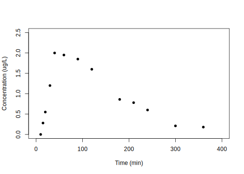

Chapter 5 구획분석의 자료해석
한성필10
5.1 서론
약동학 구획분석을 한 문장으로 표현하자면 시간 농도(time-concentration data) 자료에 대한 약동학 파라미터 추정값(pharmacokinetic parameter estimates)을 구하는 과정이다. 다시 말하자면, 인체의 여러 장기(organ) 또는 계(system)를 몇개의 구획으로 단순화하고 우리의 관심이 되는 특성을 파라미터화하여 각 구획들 간의 연관성을 파악하는 것이다. 약동학 파라미터의 추정을 위해서 비선형 회귀분석(nonlinear regression analysis)이 사용 되어 왔고 현재 이 방식은 약동학 분석에서 가장 필수적인 방법론으로 자리 잡은 상태이다. 추정에는 약동학 수식이 필요한데, 비선형 회귀분석 시 모델식(model formulation)으로 사용되며, 이 수식 안에 우리가 추정하고자 하는 약동학 파라미터가 모두 포함되어 있다.
구획간의 약물 이동은 1차식 또는 선형 약동학(linear pharmacokinetics)을 따른다고 가정하게 된다. 선형 약동학이란 간단히 말해서 용량이 두배가 되면 농도도 두 배가 되는 것을 말하며, D(용량) → C(농도)로 나타낼 경우 2D → 2C 의 관계가 성립하는 것을 말한다. 1구획 모델에서는 구획들 간의 약물 분포가 균일하다는 가정 하에 인체를 단일구획으로 기술한다. 1구획 모델에서는 약물이 작용부위로 신속히 이동한다고 가정하며 혈장을 자료 분석의 기준 구획으로 사용한다. 1구획 모델의 로그 혈장농도값은 시간에 대해 하나의 기울기로 감소하는 양상을 나타낸다. 2구획 모델에서는 구획들 간의 약물 분포가 균일하지 않다고 보며 인체를 중심 구획 (central compartment) 과 말초구획 (peripheral compartment)로 나누어 기술한다. 중심구획은 관류(perfusion)가 빠른 기관(예: 간, 콩팥)을 나타내는데 이는 약물의 분포와 관계하고 α-phase로 나타낸다. 반면 말초구획은 관류가 느린 기관(예: 근육, 지방)을 나타내며 이는 약물의 소실과 관계하고 β-phase로 나타낸다. 2구획 모델의 혈장농도 로그값은 시간에 대해 기울기가 두 개인 이직선적으로 감소하는 양상을 나타내는데, 처음의 빠른 기울기는 분포기를 나타내고, 나중의 느린 기울기는 소실기를 나타내게 된다.

그림 5.1: 3구획 약동학 모델에서 시간에 따른 농도 변화의 양상에 대한 모식도 (Han 2014)
정맥주사 후 3구획 모델을 비유를 들어 설명하자면, 구획을 나타내는 원통이 그림 5.1과 같이 세 개가 있다고 가정을 할 수 있다. 약물을 정맥주사(i.v.bolus)하면 직후에 혈중 농도가 최대에 도달하였다가 시간이 지남에 따라 감소하게 되는데, 구획간의 분포 및 제거에 의해 약물의 농도가 감소를 하게 된다. 여기서 V1은 중심구획, V2는 rapid peripheral compartment이고, V3은 slow peripheral compartment이다. V1, V2, V3 원통의 부피는 약물이 분포하는 용적이고, 높이는 농도에 해당한다. 수평의 연결 파이프에 의해 약물이 분포 및 제거된다. 정맥주사 후 초기에는 약물이 주로 V1에서 V2로 이동하면서 혈중농도가 급격하게 감소하고(rapid distribution phase), 그 이후에는 V1에서 V3로 약물이 이동하면서 동시에 V2에서는 거꾸로 V1으로 이동하며 전체적으로는 혈중농도가 감소(slow distribution phase)하게 된다. 그 후에는 V2, V3에서의 약물은 V1으로 이동해 나오면서 동시에 V1에서는 elimination이 일어나 농도가 아주 서서히 감소하게 된다. (terminal phase)
이렇게 약물의 이동에 대한 정량적인 표현을 위해서는 약동학 수식에 대해 익숙해 져야 할 필요가 있고, 수식을 잘 아는 것 만큼이나 자료를 해석하고 추정값을 실제로 구하는 작업을 충분히 경험할 필요가 있다.
5.2 상용 소프트웨어를 이용한 구획분석 개론

그림 5.2: 다양한 상용 소프트웨어의 사용 예. A. GUI 기반 Phoenix NLME, B. GUI 기반 Lixoft Monolix, C. NONMEM의 제어구문
약동학 자료의 분석은 복잡하고 시간이 많이 걸리는 일이다. 모든 생물학 자료가 그러하듯 높은 변동성과 많은 노이즈가 PK 자료에 포함되어 있다. (Gabrielsson 2006) 따라서 비선형 회귀분석(Nonlinear regression analysis)이 필요한 구획분석을 위해서는 컴퓨터 소프트웨어의 사용이 필수적이다. 이 때 Certara Phoenix NLME11, Monolix12와 같은 여러가지 소프트웨어들이 사용되고 있지만, 가장 널리쓰이는 도구는 ICON사의 NONMEM13이라고 하는 소프트웨어이다. (그림 5.2) 이것은 FORTRAN 코드로 프로그램 되어 있으며 2021년 현재 버전 7.5.0까지 지속적으로 업데이트 되고 있는 소프트웨어로, 구획분석 및 계량약리학 분야에서 가장 표준적인 도구로 쓰이고 있다. 이에 대한 각종 자료를 이곳에서 다루기는 지면의 제약과 이론의 어려움 때문에 별도의 참고서적을 활용하는 것이 바람직할 것이다. (Bauer 2020; Gabrielsson 2006; D. S. Yim 2020)
상용 소프트웨어를 통한 구획분석 방법은 GUI 기반이고 많은 사용자가 확보되어 있다는 장점이 있으나, 상당한 비용을 매년 지불하여야 하며, 접근이 다소 쉽지 않다는 단점을 가지고 있다.
5.3 구획분석에 활용할 수 있는 R package 소개
이를 극복하기 위해 통계 및 수학적 계산에 적합한 R 언어 기반의 오픈소스 소프트웨어가 활발히 개발되고 있다. 즉, 비구획분석을 위한 R 패키지를 3장에서 소개한 것과 마찬가지로 구획분석용 R 패키지에 대한 다양한 시도가 일어나고 있는 것이다. 본 서에서는 무료 R 패키지 “wnl”를 사용한 자료해석과 예제에 대해 다루고자 한다. (Bae 2020)
NONMEM에서는 비선형 회귀분석을 위해서 최대 가능도 추정법(maximum likelihood estimation)을 사용한다. 최대 가능도 추정법에서 얻어진 sample 데이터에서 Y가 현재 측정된 값, E(Y)는 모델에 의해 각각의 관측 지점에서의 예상되는 값, 그리고 V(Y)를 그 모델의 분산으로 표현한다. 이 때 모델에 주어진 관측값에 대한 가능도(likelihood)는 다음과 같이 표현될 수 있다.
\[\begin{equation} L = \frac{1}{\sqrt{2\pi V(Y)}} \cdot e^{-\frac{1}{2V(Y)}\cdot(Y-E(Y))^2} \tag{5.1} \end{equation}\]
이때 이 일련의 관찰 값에 대한 가능도는 개개인 관찰값의 확률을 통해 나오게 된다. 따라서 n개의 관찰값이 있으면 그 종합된 가능도는 n개의 개개인별 확률이 되고 subject에 대한 가능도는 다음과 같이 계산된다.
\[\begin{equation} L_i = \prod_{j=1}^{n_i}\frac{1}{\sqrt{2\pi V(Y_{ij})}} \cdot e^{-\frac{1}{2V(Y_{ij})}\cdot(Y_{ij}-E(Y_{ij}))^2} \tag{5.2} \end{equation}\]
이것은 -2 로그 가능도(-2 log likelihood)로 전환 될 수 있으며, 식 (5.3)다음과 같이 표현된다.
\[\begin{equation} -2log(L_i) = n_i \cdot log(2\pi) + \sum_{j=1}^{n}(log(V(Y_{ij}))+ \frac{(Y_{ij} - E(Y_{ij}))^2}{V(Y_{ij})}) \tag{5.3} \end{equation}\]
결국 NONMEM은 이 -2 로그 가능도의 값을 최소화(즉, 가능도의 값을 최대화) 해 주는 PK 파라미터 값들의 조합을 찾아준다. 이 때, 오른쪽 수식에서 앞에있는 nilog(2π)는 상수이기 때문에 없애고, 실제 i번째 환자에서의 목적함수(objective function)는 다음과 같이 나타난다.
\[\begin{equation} OBJ_i = n_i \cdot logV(Y_i) + \sum_{j=1}^{n} \frac{(Y_{ij} - E(Y_{ij}))^2}{V(Y_{ij})} \tag{5.4} \end{equation}\]
실제 여기에서 derivation 을 정규 분포에만 적용한 것이 최대 가능도 측정법(maximum likelihood estimation method)14이라면, 정규 분포라는 가정 없이도 적용한 것이 NONMEM이며 이 방식을 `확장된 최소 제곱법’(extended least square method)이라고 한다.
이 책의 예제에서는 NONMEM의 확장된 최소 제곱법을 적용한 wnl 패키지의 nlr() 함수를 사용하였다.
각 모델에 맞는 적합한 모델에 따라 다음과 같은 script 형태로 입력해 주게 되며, 그에 대한 표준 오차(standard error of estimates), 공분산 행렬(covariance matrix of estimates), run test results on residuals, AIC, AICc, SBC를 내부 계산을 통하여 도출하게 된다.
이때 run test란 잔차(residual)들이 무작위적으로 분포하는지를 보기 위해서 각각의 잔차에서 최대 양수와 음수가 연속구간의 길이가 얼마나 되는지를 보는 방법이다. 이 때 계산된 p-value를 통해서 실제로 잔차가 무작위적으로 분포하는지, 편향되게 분포하는지를 고려해 볼 수 있다.
AIC, AICc, SBC는 Akaike information criterion, Akaike information criterion corrected, Schwarz criterion을 의미하며 각각의 통계적 모델에서 구조가 적합한지를 확인할수 있도록 도와주는 지표이다.
5.4 1구획모델을 이용한 경구투여 후 약동학 자료 분석
아래의 코드로 wnl 라이브러리를 불러오고 hands-on1.csv15 파일을 읽어올 수 있다.
library(wnl)
dPK02 = read.csv("data/hands-on1.csv", skip=1)
colnames(dPK02) = c("TIME", "DV")
plot(dPK02[,"TIME"], dPK02[,"DV"], xlim=c(0, 400), ylim=c(0, 2.5),
xlab="Time (min)", ylab="Concentration (ug/L)", pch=16)
먼저 NCA를 수행한다. Tmax는 40분, Cmax는 2.00 ug/L인 것을 알 수 있다.
## b0 CMAX CMAXD TMAX TLAG
## 1.558e+00 2.000e+00 2.000e-02 4.000e+01 1.000e+01
## CLST CLSTP TLST LAMZHL LAMZ
## 1.800e-01 1.648e-01 3.600e+02 7.425e+01 9.335e-03
## LAMZLL LAMZUL LAMZNPT CORRXY R2
## 9.000e+01 3.600e+02 7.000e+00 -9.822e-01 9.647e-01
## R2ADJ AUCLST AUCALL AUCIFO AUCIFOD
## 9.577e-01 3.309e+02 3.309e+02 3.502e+02 3.502e+00
## AUCIFP AUCIFPD AUCPEO AUCPEP AUMCLST
## 3.485e+02 3.485e+00 5.507e+00 5.064e+00 4.231e+04
## AUMCIFO AUMCIFP AUMCPEO AUMCPEP VZFO
## 5.131e+04 5.055e+04 1.755e+01 1.631e+01 3.059e+01
## VZFP CLFO CLFP MRTEVLST MRTEVIFO
## 3.073e+01 2.856e-01 2.869e-01 1.279e+02 1.465e+02
## MRTEVIFP
## 1.450e+02
## attr(,"units")
## [1] "" "ug/L" "ug/L/ug"
## [4] "min" "min" "ug/L"
## [7] "ug/L" "min" "min"
## [10] "/min" "min" "min"
## [13] "" "" ""
## [16] "" "min*ug/L" "min*ug/L"
## [19] "min*ug/L" "min*ug/L/ug" "min*ug/L"
## [22] "min*ug/L/ug" "%" "%"
## [25] "min2*ug/L" "min2*ug/L" "min2*ug/L"
## [28] "%" "%" "L"
## [31] "L" "L/min" "L/min"
## [34] "min" "min" "min"
## attr(,"UsedPoints")
## [1] 7 8 9 10 11 12 13아래에서 경구 복용 후 1차식16에 의해 소실되는 약물의 약동학 모델을 사용한다. 이 경우에는 wnl 패키지 내부에 기본적 equation이 정의되어 있으므로 추가적인 equation을 입력하지 않고 각각의 파라미터의 값에 해당하는 THETA에 대해서만 입력하였다. 필요한 THETA는 k(제거속도상수), ka(흡수속도상수), V(부피), tlag(흡수가 지연되는 시간)이다.
5.4.1 Compartmental analysis without Tlag
아래는 경구 투여 1구획, 지연 시간이 없는 모델이다. 모델의 R 스크립트에서 THETA[1], THETA[2], THETA[3]는 각각 파라미터 중 k(제거속도상수), ka(흡수속도상수), V(부피)를 의미한다.
DOSE = 100
fPK02a = function(THETA) # Prediction function
{
Ka = THETA[1]
V = THETA[2]
K = THETA[3]
Cp = DOSE/V*Ka/(Ka - K)*(exp(-K*TIME) - exp(-Ka*TIME))
return(Cp)
}위 코드에서 DOSE는 Cp의 단위와 일치해야 하며, fPK2a()는 함수(function)로서, THETA를 입력 인자로 받고 Cp를 출력값으로 갖도록 작성된다.
각각의 nonlinear regression을 위해서 THETA에 대한 초기값(initial estimate)을 아래와 같이 넣어준다. (nlr() 함수의 IE() 인자에 적용)
## ka V k AddErrVar AddErrSD
## PE 1.320e-02 21.018 1.320e-02 0.087014 0.29498
## SE 5.442e-03 8.623 5.442e-03 0.034130 0.05785
## RSE 4.122e+01 41.029 4.122e+01 39.223143 19.61157
## LL 8.915e-04 1.510 8.914e-04 0.009807 0.16411
## UL 2.551e-02 40.525 2.551e-02 0.164221 0.425855.4.2 Compartmental analysis with Tlag
경구 투여 1구획분석, 지연 시간이 있는 모델이다. ka, V, k에 Tlag가 추가되어 농도를 나타낼 수 있다.
fPK02b = function(THETA) # Prediction function
{
Ka = THETA[1]
V = THETA[2]
K = THETA[3]
tlag = THETA[4]
Cp = DOSE/V*Ka/(Ka - K)*(exp(-K*(TIME - tlag)) - exp(-Ka*(TIME - tlag)))
return(Cp)
}TIME = dPK02[,"TIME"]
r2 = nlr(fPK02b, dPK02, pNames=c("ka", "V", "k", "tlag"),
IE=c(0.1, 30, 0.05, 20))
r2$Est## ka V k tlag AddErrVar
## PE 0.02747 27.354 0.010511 11.3754 0.015494
## SE 0.00606 4.149 0.001938 0.8676 0.006077
## RSE 22.06025 15.167 18.432707 7.6269 39.223384
## LL 0.01350 17.787 0.006043 9.3748 0.001480
## UL 0.04144 36.921 0.014979 13.3761 0.029509
## AddErrSD
## PE 0.12448
## SE 0.02441
## RSE 19.61169
## LL 0.06818
## UL 0.180775.4.3 모델링 결과
위 두개의 모델을 비교할 때 지연 시간이 있는 모델의 적합이 더 좋은 것을 알 수 있다. (그림 5.3) Cmax 부분을 주의깊게 살펴야 한다.
plot(dPK02[,"TIME"], dPK02[,"DV"], xlim=c(0, 400), ylim=c(0, 2.5),
xlab="Time (min)", ylab="Concentration (ug/L)", pch=16)
TIME = 0:400
lines(TIME, fPK02a(r1$Est["PE", 1:3]), lty=2)
lines(TIME, fPK02b(r2$Est["PE", 1:4]))그림 5.3: wnl 패키지를 통해 얻어진 경구 투여 1구획분석 PK 파라미터로 400분까지 시뮬레이션한 결과. 모델에서 지연 시간(lag time)의 유무에 따라 Cmax 부분의 차이가 두드러지는 것을 알 수 있음 (실선: 지연 시간이 있는 모델, 점선: 지연 시간이 없는 모델, 점: 관찰값)
5.5 1구획모델을 이용한 정맥주사 후 약동학 자료 분석
wnl 라이브러리를 불러오고 자료를 읽어온다.
이전 예제에서는 1명의 경구투약 후 농도 자료였고, 이번 예제는 4명의 i.v.투약 후 농도 자료이다. (그림 5.4)
hands-on2.csv17를 읽어 들인 후 그림을 통해 자료의 탐색을 수행한다.
library(wnl)
dPK01 <- read.csv("data/hands-on2.csv", skip=1)
colnames(dPK01) <- c("TIME", "DV", "ID")
library(ggplot2)
ggplot(dPK01, aes(TIME, DV, group = ID, color = as.factor(ID))) +
geom_line() + geom_point() + scale_y_log10() +
labs(color = "Subject No.")그림 5.4: 1구획모델을 이용한 정맥주사 후 농도-시간 곡선 (N=4)
- 4명의 대상자 모두 대략적으로 시간에 따른 농도 감소가 단항 지수함수적(monoexponential)인 것을 관찰할 수 있다.
- 대상자 1과 2를 비교하면 2번 대상자가 AUC가 더 작으며, 따라서 청소율이 더 클 것이라
예상할 수 있으며, Y 절편이 거의 같은 것으로 보아 분포용적이 유사할 것으로 보인다.
- 대상자 3과 4의 경우 곡선이 교차하는 형태로 눈으로는 어느 쪽이 AUC가 클지 알기 어렵고, Y절편에 해당하는 농도가 높은 쪽이 분포용적이 더 작을 것이라 예상할 수 있다.
이러한 탐색을 수치적인 해석으로 확장하기 위해 4명 자료의 NCA 분석을 수행한다. 3장에서 다루었던 tblNCA() 함수를 사용해 계산할 수 있다.
## ID b0 CMAX CMAXD TMAX TLAG CLST CLSTP TLST
## 1 1 6.919 920 92.0 10 NA 200 211.19 150
## 2 2 6.934 850 85.0 10 NA 42 45.18 150
## 3 3 6.878 800 80.0 10 NA 60 56.81 150
## 4 4 6.208 465 46.5 10 NA 120 117.19 150
## LAMZHL LAMZ LAMZLL LAMZUL LAMZNPT CORRXY R2
## 1 66.39 0.010441 10 150 10 -0.9943 0.9887
## 2 33.29 0.020824 10 150 10 -0.9951 0.9902
## 3 36.64 0.018919 10 150 10 -0.9984 0.9969
## 4 72.02 0.009625 10 150 10 -0.9972 0.9944
## R2ADJ AUCLST AUCALL AUCIFO AUCIFOD AUCIFP AUCIFPD
## 1 0.9873 77590 77590 96745 9675 97818 9782
## 2 0.9890 48374 48374 50391 5039 50544 5054
## 3 0.9965 48431 48431 51602 5160 51434 5143
## 4 0.9937 39678 39678 52146 5215 51854 5185
## AUCPEO AUCPEP AUMCLST AUMCIFO AUMCIFP AUMCPEO
## 1 19.800 20.679 4337000 9044967 9308475 52.05
## 2 4.003 4.292 1967000 2366394 2396605 16.88
## 3 6.146 5.838 2077250 2720574 2686362 23.65
## 4 23.910 23.482 2245250 5410815 5336766 58.50
## AUMCPEP C0 AUCPBEO AUCPBEP VZO VZP CLO
## 1 53.41 1058.0 10.223 10.111 9.90 9.791 0.1034
## 2 17.93 1146.8 19.813 19.753 9.53 9.501 0.1984
## 3 22.67 941.2 16.871 16.926 10.24 10.276 0.1938
## 4 57.93 540.6 9.642 9.696 19.92 20.037 0.1918
## CLP MRTIVLST MRTIVIFO MRTIVIFP VSSO VSSP
## 1 0.1022 55.90 93.49 95.16 9.664 9.728
## 2 0.1978 40.66 46.96 47.42 9.319 9.381
## 3 0.1944 42.89 52.72 52.23 10.217 10.155
## 4 0.1928 56.59 103.76 102.92 19.899 19.8485.5.1 Compartmental analysis
V, K만 있으면 단항 지수함수적 농도 감소를 보이는 i.v.dosing의 농도를 나타낼 수 있으므로 아래와 같이 간단한 함수를 만들 수 있다.
IDs = unique(dPK01[,"ID"])
nID = length(IDs)
DOSE = 10000 # ug
fPK01 = function(THETA) # Prediction function
{
V = THETA[1]
K = THETA[2]
Cp = DOSE/V*exp(-K*TIME)
return(Cp)
}Subject가 여러 명일 경우 각 대상자의 값을 구하기 위해서 for 함수를 사용하게 되는데, 다소 복잡해보이지만 nlr 함수를 여러번 사용하며 각 대상자의 약동학 파라미터 추정을 수행하는 것이 핵심이다.
Result = vector()
for (i in 1:nID) {
cID = IDs[i]
Data = dPK01[dPK01$ID == cID,]
TIME = dPK01[dPK01$ID == cID,"TIME"]
Res = nlr(fPK01, Data, pNames=c("V", "k"), IE=c(20, 0.2),
SecNames=c("CL", "AUC", "AUMC" , "Thalf", "MRT"),
SecForms=c(~V*k, ~DOSE/V/k, ~DOSE/V/k/k, ~log(2)/k, ~1/k))
Result = rbind(Result, cbind(ID=cID, Res$Est))
} ; Result## ID V k AddErrVar AddErrSD CL
## PE 1 9.9784 0.0102561 432.738 20.802 0.102340
## SE 1 0.1834 0.0003874 193.526 4.652 0.002597
## RSE 1 1.8382 3.7771994 44.721 22.361 2.537782
## LL 1 9.5447 0.0093400 -24.879 9.803 0.096198
## UL 1 10.4122 0.0111721 890.354 31.802 0.108481
## PE 2 9.8162 0.0206613 753.970 27.459 0.202816
## SE 2 0.3308 0.0010188 337.185 6.140 0.005970
## RSE 2 3.3700 4.9308074 44.721 22.361 2.943762
## LL 2 9.0340 0.0182523 -43.346 12.940 0.188698
## UL 2 10.5985 0.0230703 1551.287 41.977 0.216934
## PE 3 10.2230 0.0190412 77.051 8.778 0.194658
## SE 3 0.1087 0.0003052 34.458 1.963 0.001891
## RSE 3 1.0630 1.6029349 44.721 22.361 0.971497
## LL 3 9.9660 0.0183195 -4.430 4.137 0.190187
## UL 3 10.4800 0.0197629 158.532 13.419 0.199130
## PE 4 19.9472 0.0098140 72.194 8.497 0.195761
## SE 4 0.2954 0.0003071 32.287 1.900 0.004148
## RSE 4 1.4811 3.1291755 44.722 22.361 2.119026
## LL 4 19.2486 0.0090878 -4.151 4.004 0.185952
## UL 4 20.6457 0.0105401 148.540 12.989 0.205570
## AUC AUMC Thalf MRT
## PE 9.771e+04 9.527e+06 67.5840 97.5031
## SE 2.480e+03 5.876e+05 2.5528 3.6829
## RSE 2.538e+00 6.167e+00 3.7772 3.7772
## LL 9.185e+04 8.138e+06 61.5476 88.7945
## UL 1.036e+05 1.092e+07 73.6204 106.2118
## PE 4.931e+04 2.386e+06 33.5481 48.3997
## SE 1.451e+03 1.763e+05 1.6542 2.3865
## RSE 2.944e+00 7.389e+00 4.9308 4.9308
## LL 4.587e+04 1.969e+06 29.6366 42.7565
## UL 5.274e+04 2.803e+06 37.4597 54.0429
## PE 5.137e+04 2.698e+06 36.4025 52.5177
## SE 4.991e+02 6.551e+04 0.5835 0.8418
## RSE 9.715e-01 2.428e+00 1.6029 1.6029
## LL 5.019e+04 2.543e+06 35.0227 50.5271
## UL 5.255e+04 2.853e+06 37.7822 54.5083
## PE 5.108e+04 5.205e+06 70.6287 101.8957
## SE 1.082e+03 2.673e+05 2.2101 3.1885
## RSE 2.119e+00 5.135e+00 3.1292 3.1292
## LL 4.852e+04 4.573e+06 65.4027 94.3561
## UL 5.364e+04 5.837e+06 75.8548 109.43535.5.2 모델링 결과
정맥주사 후 약동학 자료에 대해 1구획모델로 구획분석을 수행하였고, 이때 구해진 PK 파라미터를 사용하여 150분까지 시뮬레이션 한 결과를 그림으로 나타내었다 (그림 5.5).
plot(0, 1, type="n", xlim=c(0, 160), ylim=c(10, 1000),
log="y", xlab="Time (min)", ylab="Concentration (ug/L)")
for (i in 1:nID) {
cID = IDs[i]
TIME = dPK01[dPK01$ID == cID,"TIME"]
points(TIME, dPK01[dPK01$ID == cID,"DV"], pch=14+i)
cTHETA = Result[Result[,"ID"]==cID & rownames(Result)=="PE", c("V", "k")]
lines(TIME, fPK01(cTHETA))
}그림 5.5: wnl 패키지를 통해 얻어진 정맥 투여 1구획모델 PK 파라미터로 150분까지 시뮬레이션한 결과. (실선: 예측값 곡선, 도형: 관찰값)
5.6 2구획모델 경구 흡수 이용한 약동학 자료 분석
wnl 라이브러리를 불러오고 자료를 읽어온다.
hands-on3.csv18를 읽어 들인 후 모델링을 수행한다.
library(wnl)
dPK14 <- read.csv("data/hands-on3.csv", skip=1)
colnames(dPK14) = c("TIME", "DV") ; dPK14## TIME DV
## 1 0.083 13.90
## 2 0.167 152.00
## 3 0.250 226.00
## 4 0.500 204.00
## 5 1.000 149.00
## 6 1.500 100.00
## 7 2.000 66.00
## 8 3.000 36.00
## 9 4.000 17.70
## 10 6.000 6.90
## 11 8.000 3.96
## 12 12.000 2.89
## 13 24.000 0.90
## 14 25.000 0.905.6.1 Compartmental analysis without Tlag
아래의 코드는 경구 투여 2구획, 지연 시간이 없는 모델이다.
2차 지수로 감소하는 약물에서의 약동학 모델이며, 이때의 농도 값(Cp)을 구하기 위한 공식을 사용하였으며, Ka(Ka), Vc(Vc), k21(k21), alpha(a), beta(b)로 농도를 나타낼 수 있다.
Dpo = 23158
## without lag
fPK14a = function(THETA)
{
Vc = THETA[1]
Ka = THETA[2]
k21 = THETA[3]
a = THETA[4] # alpha
b = THETA[5] # beta
T1 = e$DATA[,"TIME"]
Co = Ka*Dpo/Vc*((k21-a)/(Ka-a)/(b-a)*exp(-a*T1) +
(k21-b)/(Ka-b)/(a-b)*exp(-b*T1) +
(k21-Ka)/(a-Ka)/(b-Ka)*exp(-Ka*T1))
return(Co)
}
r1 <- nlr(fPK14a, dPK14,
pNames=c("Vc/F", "Ka", "k21", "alpha", "beta"),
IE=c(350, 11, 1, 0.1, 0.01))
r1$Est## Vc/F Ka k21 alpha beta AddErrVar
## PE 43.75 2.356 0.6945 2.338 0.3953 537.46
## SE 40.54 2.220 0.9619 2.218 0.4927 203.24
## RSE 92.67 94.253 138.4974 94.879 124.6313 37.82
## LL -49.74 -2.765 -1.5236 -2.777 -0.7409 68.79
## UL 137.23 7.476 2.9126 7.452 1.5316 1006.14
## AddErrSD
## PE 23.183
## SE 4.383
## RSE 18.908
## LL 13.075
## UL 33.2915.6.2 Compartmental analysis with Tlag
경구 투여 2구획, 지연 시간이 있는 모델이다. Ka, V, k21, alpha, beta 에 Tlag가 추가되어 농도를 나타낼 수 있다.
## with lag
fPK14b = function(THETA)
{
Vc = THETA[1]
Ka = THETA[2]
k21 = THETA[3]
a = THETA[4] # alpha
b = THETA[5] # beta
TL = THETA[6] # Tlag
T1 = e$DATA[,"TIME"]
Co = Ka*Dpo/Vc*((k21-a)/(Ka-a)/(b-a)*exp(-a*(T1-TL)) +
(k21-b)/(Ka-b)/(a-b)*exp(-b*(T1-TL)) +
(k21-Ka)/(a-Ka)/(b-Ka)*exp(-Ka*(T1-TL)))
Co[Co < 0] = 0 # remove negative concentrations before tlag
return(Co)
}
r2 <- nlr(fPK14b, dPK14,
pNames=c("Vc/F", "Ka", "k21", "alpha", "beta", "Tlag"),
IE=c(150, 11, 0.12, 0.1, 0.01, 0.05))
r2$Est## Vc/F Ka k21 alpha beta
## PE 88.526 19.76 8.026e-03 0.73180 0.00209
## SE 2.314 3.76 1.241e-01 0.04571 0.11273
## RSE 2.613 19.02 1.546e+03 6.24606 5393.09489
## LL 83.056 10.87 -2.854e-01 0.62371 -0.26448
## UL 93.997 28.65 3.015e-01 0.83988 0.26866
## Tlag AddErrVar AddErrSD
## PE 0.121620 17.891 4.2298
## SE 0.008117 6.849 0.8096
## RSE 6.674037 38.281 19.1404
## LL 0.102426 1.696 2.3154
## UL 0.140813 34.086 6.14415.6.3 모델링 결과
1구획모델에서와 같이 지연 시간이 있는 모델의 적합이 더 좋은 것을 알 수 있다. 특히 Cmax 부분에서의 적합 차이를 주의해서 살펴 볼 필요가 있다.
plot(dPK14[,"TIME"], dPK14[,"DV"], xlim=c(0, 25), ylim=c(0, 250),
xlab="Time (min)", ylab="Concentration (ug/L)", pch=16)
TIME = dPK14[,"TIME"]
lines(TIME, fPK14a(r1$Est["PE", 1:5]), lty=2)
lines(TIME, fPK14b(r2$Est["PE", 1:6]))그림 5.6: wnl 패키지를 통해 얻어진 경구 투여 2구획모델 PK 파라미터로 25시간 시뮬레이션한 결과. 모델에서 지연 시간(lag time)의 유무에 따라 Cmax 부분의 차이가 두드러지는 것을 알 수 있다. (실선: 지연 시간이 있는 모델, 점선: 지연 시간이 없는 모델, 점: 관찰값)
5.7 Theoph 약동학 자료의 구획분석
R에 내장된 Theoph 약동학 자료의 구획분석을 아래의 코드를 사용하여 수행한다. Minimization이 된 후 1구획 약동학 모델에서 언급된 파라미터 이외에 다른 파라미터에 대해서도 값을 구하기 위해서 다음과 같이 CL(제거 속도), t1/2(반감기), MRT(평균잔류시간)를 추가한 후, 입력한 파라미터값들을 구하기 위한 수식을 뒤쪽 부분 `SecForms’ 인자에 입력하게 된다. 이런 방법을 통하여 우리가 원하는 파라미터들의 점추정치와(point estimate), 그리고 표준 오차(standard error of estimates)를 모두 구할 수 있다.
본문에 결과를 싣기에 지면이 부족하여 별첨 B에 수록하였다.
library(wnl)
tData = Theoph
colnames(tData) = c("ID", "BWT", "DOSE", "TIME", "DV")
fPK = function(THETA) # Prediction function
{
DOSE = 320000 # in microgram
TIME = e$DATA[,"TIME"] # use data in e$DATA
K = THETA[1]
Ka = THETA[2]
V = THETA[3]
Cp = DOSE/V*Ka/(Ka - K)*(exp(-K*TIME) - exp(-Ka*TIME))
return(Cp)
}
IDs = unique(tData[,"ID"])
nID = length(IDs)
for (i in 1:nID) {
Data = tData[tData$ID == IDs[i],]
Theoph_nlr = nlr(fPK, Data,
pNames=c("k", "ka", "V"), IE=c(0.1, 3, 500),
SecNames=c("CL", "Thalf", "MRT"),
SecForms=c(~V*k, ~log(2)/k, ~1/k))
print(paste("## ID =", i, "##"))
print(Theoph_nlr)
}5.8 맺음말
이상으로 구획모델링(compartment modeling)에 대한 이론과 R코드를 사용한 자료해석을 알아보았다. 이는 단순하지만 여러 현상을 묘사할 수 있는 유용한 도구 중 하나이다. 즉, 간단한 수식으로 구성된 모델을 통해 현상을 분석하고 여러 변수를 연관시킨 후, 시뮬레이션을 통해 여러 상황들을 예측할 수 있다. 여기에서는 가장 단순한 형태의 모델을 사용하여 공개 소프트웨어를 사용한 구획분석을 수행하였으나, 실제 자료 분석에는 보다 전문적인 소프트웨어를 사용하게 된다. 그러나 본 교재에서 다룬 기초적인 내용이 전문적인 구획분석 도구를 이해하고 사용하는데 필요한 핵심 내용을 포함하고 있으므로 여전히 유용할 것이다.
참고문헌
약동학 데이터를 분석하여 PK 파라미터를 찾는 업무를 하지 않는 독자들은 이 장을 읽지 않고 넘어가도 좋습니다.↩︎
최대 가능도 측정법(maximum likelihood estimation method)은 점 추정치를 찾는데까지는 오래 걸리나, 표준 오차(standard error of estimates)를 구하는게 유리하다. 최근에는 최소 제곱법(least square method) 보다 널리 쓰이고 있다.↩︎
1차식(first-order kinetics)에 의한 소실이란 체내에 남이 있는 특정시점의 약물량의 일정 분율만큼 약물이 단위시간당 소실되는 것을 말한다.↩︎